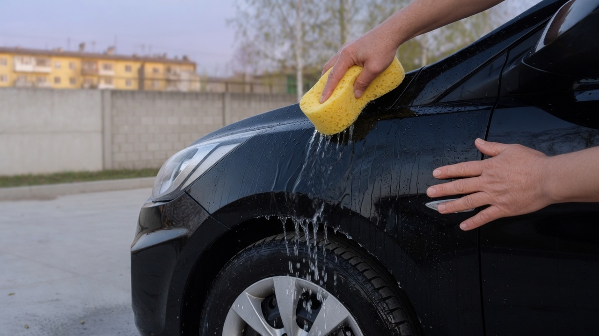
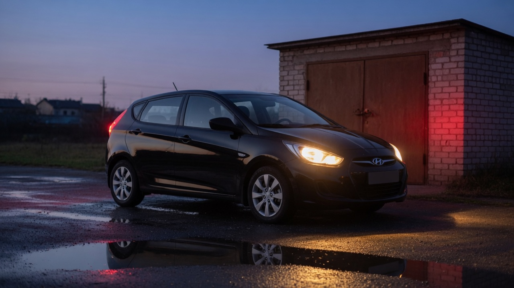

Шины
Утром, пока холодные
Давление Кирилл смотрит до поездки. После езды шина тёплая и показывает больше, чем есть на самом деле.
В мае правое переднее было ниже остальных. Он подкачал его у дома.

По субботам
Сначала Кирилл моет кузов, потом колёса. Для кузова и для колёс у него разные губки.
Мойка
Он начинает с крыши и капота. Губку ведёт по мокрой краске и не трёт сухую пыль.
Колёса моет в конце, отдельной губкой, чтобы песок с резины не попал на крыло.

Шины
Давление Кирилл смотрит до поездки. После езды шина тёплая и показывает больше, чем есть на самом деле.
В мае правое переднее было ниже остальных. Он подкачал его у дома.
В салоне
На крыше у машины ничего нет. В салоне стоит кондиционер.
В бардачке лежат перчатки, фонарик и тонкая тетрадь. В тетрадь он пишет дату, куда ездил, и одну пометку.

Свет
Порядок
Моет сверху вниз.
Моет другой губкой.
Проверяет давление, пока резина холодная.
Смотрит фары, повороты и стоп-сигналы.
После этого вешает ключ на крючок у двери.